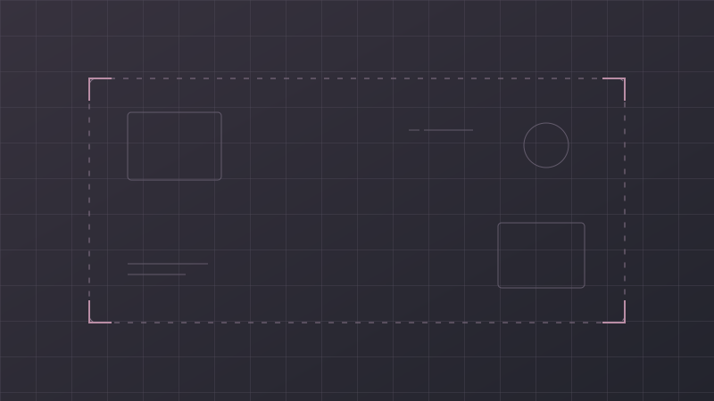

Предварительный акт видеоаудита
Требует подтверждения уполномоченным сотрудником. Не является официальным актом банка.
От сигнала модели к наблюдению, проверенному человеком.
Положительное бинарное решение модели не подтверждает нарушение.

Оценка модели — не вероятность нарушения. Уверенность в факте определяет проверяющий.
Временное соответствие не доказывает визуальную релевантность. В рабочем сервисе здесь должны быть оригинальные JPEG.
Демонстрация выбора файла. Реальная обработка недоступна.
Файл не выбран
Выбор файла показывает только проверку расширения и размера. Демонстрация работает независимо от выбранного видео.
Результат модели и человеческая проверка должны оставаться различимыми.
Требует подтверждения уполномоченным сотрудником. Не является официальным актом банка.
В рабочем сервисе содержит происхождение и контрольные суммы материалов. В прототипе не формируется.
Сохранение формы не изменяет модельный сигнал и не устанавливает правовую квалификацию.
Пять разных вопросов — пять отдельных проверок.
Есть ли бинарный сигнал? Положительное решение — повод для просмотра, не доказанное нарушение.
Где находится кандидат? Неразрешённая локализация не превращается в событие на нулевой секунде.
Какое действие наблюдается? В демо конкретный тип не распознаётся и не подтверждается.
Попадает ли timestamp кадра в подтверждённый интервал? Это не доказывает содержание кадра.
Подтверждение наблюдения отделено от применимости нормы. Автоматический юридический вывод отсутствует.
UI-кандидат для кейса ForteBank Datathon. Официальный логотип не используется; одобрение банка не подразумевается. Все примеры синтетические.
Только фактические ответы backend. Синтетические примеры не используются.
Готовность не проверялась. Проверка readiness выполняет пробное вычисление модели на backend.
Загрузка возможна только по кнопке и после проверки готовности.
Разрешённый MOV до 100 МиБ. Файл передаётся только локальному FastAPI через мост 8001 → 8000. Выбор файла сам по себе ничего не отправляет.
Файл не выбран
Превью не загружено. Результат анализа доступен независимо от превью.
Длительность ещё не получена.
Оригинальные JPEG из backend. Timestamp не доказывает визуальную релевантность или применимость нормы.
Не копируйте предположение модели в подтверждённый факт без проверки. Сохранение черновика не подтверждает нарушение. При смене события несохранённая форма очищается.
Не являются автоматически подтверждённым юридическим выводом.
Мост разрешает только фиксированные API-маршруты к 127.0.0.1:8000. Данные не отправляются внешним сервисам. Ошибка реального запроса не заменяется демо-данными. Ключ и данные исчезают при отключении/перезагрузке.
Только три документированные ссылки реестра команды. В Демо вводите только синтетические ответы; в реальном режиме — разрешённые наблюдения. Содержимое хранится в памяти вкладки. Не отправляется в API и не подтверждает норму автоматически.
Чек-лист не заполнен.